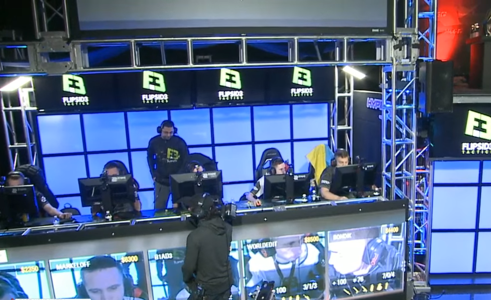
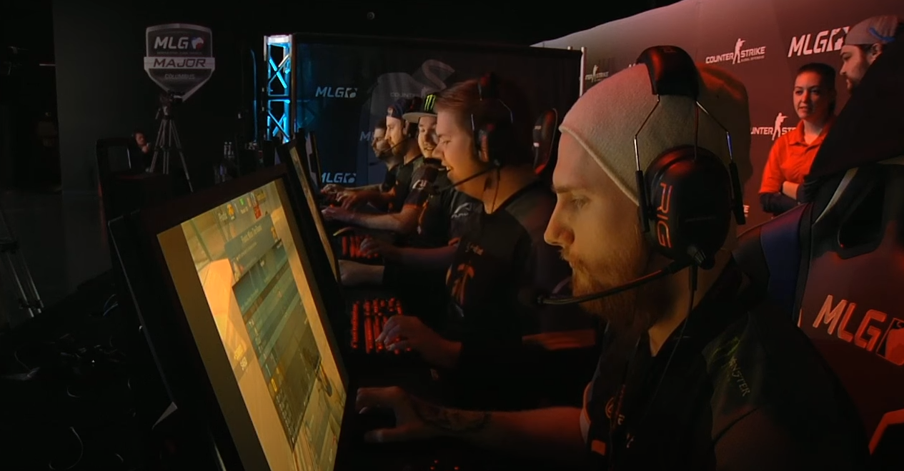
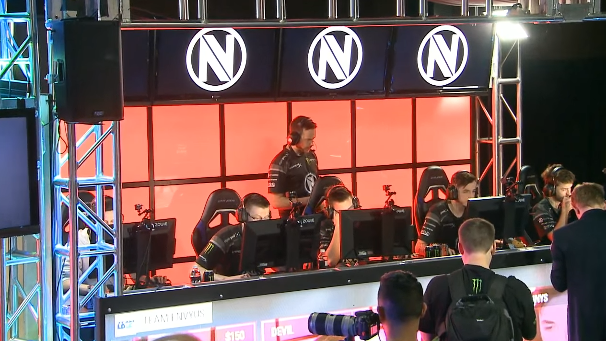
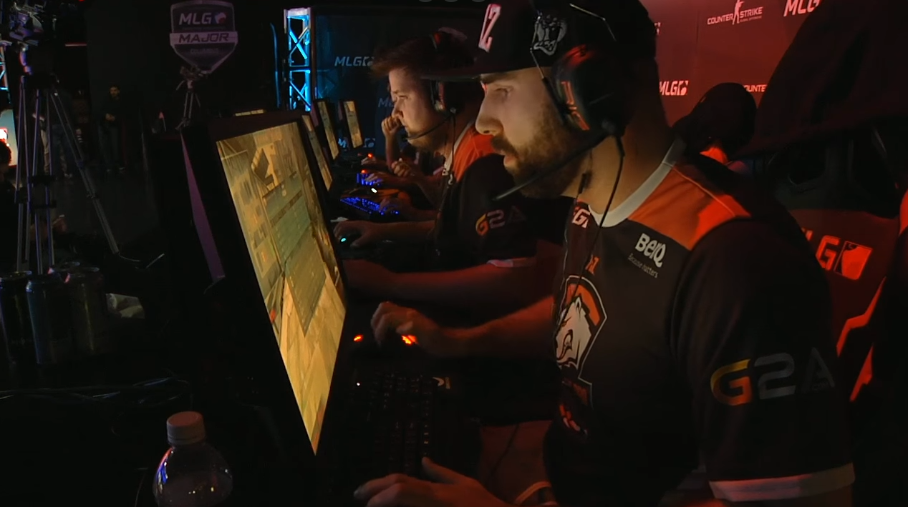

Na fase grupos tivemos supresas e também muitas decepções. Enquanto, no grupo A tudo foi como o esperado, com os ninjas da NiP ganhando da FlipSid3 na prorrogação de 19 a 17 na cache, e depois a Luminosity triunfou contra a mousesports de 16 a 13. Na partida de classificação os brasileiros varreram os suecos do mapa em um 16 a 5. O primeiro eliminado do grupo foi a ucraniana FlipSid3 no confronto com a mousesports, em um mapa que se tornou o mais longo da história do campeonato, na cobblestone os alemães ganharam de incríveis 31 a 28. Na partida decisiva MD3 a NiP ganhou de 2 a 1 da mousesports, assim eliminando-os.
 FlipSid3 vs mousesports.Já no grupo B, a Liquid surpreendeu ganhando da Faze de 16 a 11, e a fnatic passeando com a Splyce num 16 a 5. Liquid contra fnatic, a cavalaria batalhou e surpreendeu novamente colocando na prorrogação um 22 a 19 no placar Na partida de eliminação não deu pra Faze brincar com a Splyce foi um 16 a 3 sem conversa. A decisão MD3 ficou entre fnatic e Faze, os suecos demonstraram seu favoritismo ganhando de 2 a 0.
 fnatic vs Team Liquid.Enfim a decepção, no grupo C, as coisas não foram nada com o esperado, porque os atuais campeões do major da Team EnVyUs perderam para a CLG de 16 a 8. Por outro lado, a Astralis continuava forte e ganhou da Gambit de 16 a 10. No confronto de classificação, Astralis manteve o favoritismo e ganhou de 16 a 9 da CLG. E agora, o que decepcionou a todos, a Team EnVyUs foi a primeira eliminada do grupo C, num confronto apertado contra a Gambit, que terminou com um 16 a 13 no placar. Na MD3 decisiva, CLG implacou o 2 a 1 na Gambit para garantir a vaga.
 Team EnVyUs vs Counter Logic Gaming.No grupo D tudo com esperado. NaVi bate na Cloud9 num 16 a 9. Virtus Pro limpa o chão com a G2 em um simples placar de 16 a 1. Na classificatoria, NaVi manteve o bom desempenho e varreu a VP num 16 a 4. A primeira do grupo a dar adeus foi a Cloud9, que perdeu de 16 a 3 para a G2. Já na partida decisiva na melhor de 3, com um placar de 2 a 1, a VP mostrou a superioridade e mandou a G2 para casa.
 Virtus Pro vs G2.